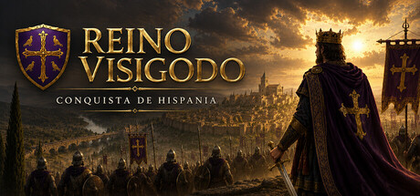

Ícaro Caído
Mi primer disco, autopublicado con el productor Alejandro de Pinedo.
El espacio personal de Manuel M. Frutos
Una canción, una historia, una herramienta para el aula. La curiosidad es el hilo que une todo lo que hago.

En mi mesa de trabajo
Dos proyectos en los que se encuentran
la historia, la música y el aula.

Conquista de Hispania
La historia que empezó en clase sigue creciendo. Ahora, en un juego de estrategia.
Conocer el proyecto ↗02 / Educación y tecnología
Herramientas hechas desde el aula, para el aula.
Entrar en el proyecto ↗
Un hilo que siempre vuelve
Mi primer disco, autopublicado con el productor Alejandro de Pinedo.
Banda sonora original y el bolero de los créditos, Pena de soledad.
Italo Dance, nostalgia de los 2000 y experimentos con inteligencia artificial musical.
De dónde viene todo esto
Un parque dibujado en BASIC, un patinete hecho de líneas y círculos. Después llegaron FastTracker 2, las canciones y las historias. Las herramientas han cambiado; las ganas de construir cosas siguen ahí.
Leer mi historia →